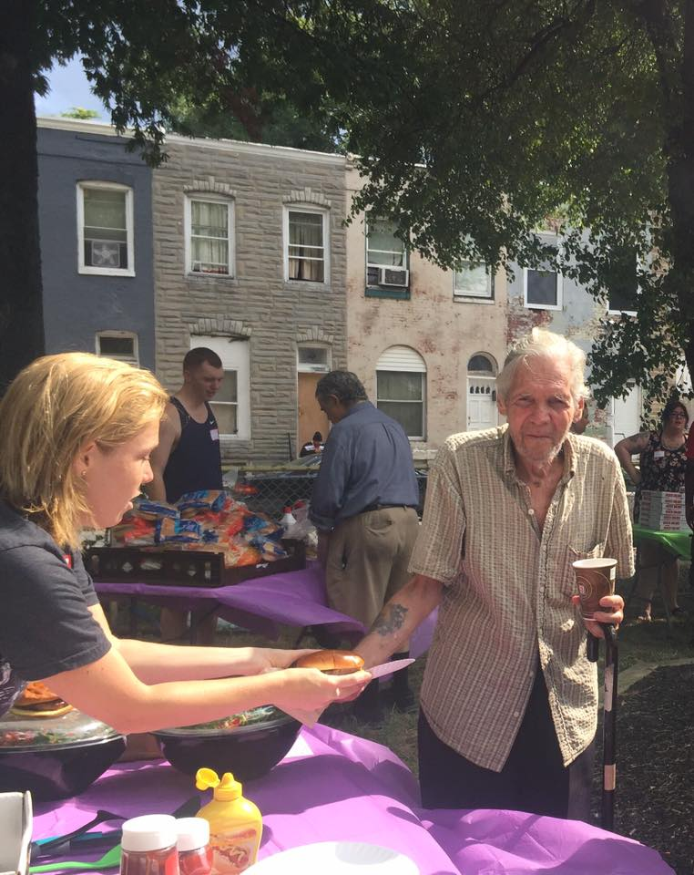

Harwood is a neighborhood of 700 families in North Central Baltimore. Within walking distance of stores, restaurants and cafes, it has fast transit to downtown and Towson, the Johns Hopkins supported Barclay Elementary and Middle school and the thriving 29th Street Community Center.
Harwood is also a friendly place where people know their neighbors. Comments by residents include: "I call this home 'cos people look out for each other!"
BUSES FROM HARWOOD GO TO:
# 8 to Towson and Downtown
#3 from 33rd St to Downtown
Purple Circulator (free bus) from St Paul via Penn Station to Federal Hill
 GDI
Contact us!
GDI
Contact us!